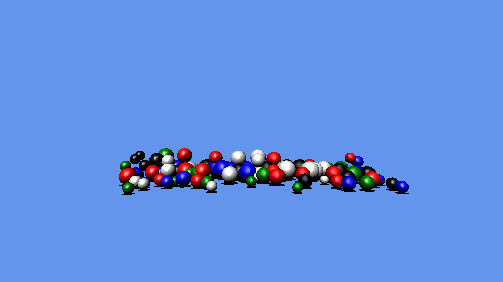

Bounce
Ported from Microsoft's XNA 4.0 Windows Phone 7 Bounce Sample.
Source for this sample on GitHub ↗

Play ▸Opens in a new tab. Click the canvas so it receives keyboard input; use Fullscreen in the game shell if your browser does not enter it automatically.
About this sample
Bounce physically simulates 100 spheres of varying size and mass. Its implicit collision solver handles sphere-to-sphere and wall impacts, with elasticity and air friction. The spheres are procedurally generated, lit with BasicEffect and drawn again as flat shadows.
On a Windows Phone, the accelerometer tilts the gravity vector and a shake adds energy to the balls. In the browser, the original phone-emulator arrow-key controls simulate tilt.
Controls
| Action | Keyboard | Gamepad |
|---|---|---|
| Tilt the simulated world | Arrow keys | — |
| Exit | Esc or close the tab | Back |